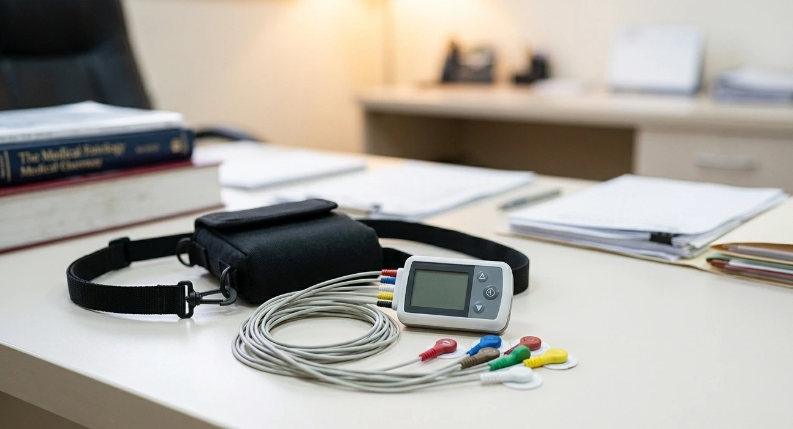

Elche · Clínica Elche Salud
Monitorización cardíaca continua de 24 horas

El Holter de ECG es un dispositivo portátil que registra la actividad eléctrica del corazón de forma continua durante 24 horas mientras el paciente realiza su vida normal. A diferencia del electrocardiograma convencional —que dura unos segundos y se realiza en reposo—, el Holter detecta alteraciones del ritmo que ocurren de forma intermitente y que podrían pasar desapercibidas en un ECG estándar.
El registro completo se analiza mediante software especializado que identifica arritmias, pausas y extrasístoles. El informe final correlaciona los hallazgos electrocardiográficos con los síntomas anotados por el paciente, lo que permite establecer si existe relación entre palpitaciones, mareos o síncopes y las alteraciones del ritmo detectadas.
Indicado para detectar y caracterizar arritmias que no se manifiestan de forma constante:
Se colocan electrodos adhesivos en el tórax (3 a 5 electrodos) conectados a un pequeño grabador que se lleva en un cinturón o colgado al cuello. Indoloro y rápido.
La piel debe estar limpia y seca. En algunos casos puede rasurase ligeramente la zona para asegurar buena adherencia.
El paciente realiza su actividad habitual: trabajar, caminar, dormir, hacer ejercicio moderado. Solo hay que evitar duchas y baños (el dispositivo no es resistente al agua) y no aplicar cremas sobre los electrodos.
Lo más importante: anotar los síntomas con la hora. Ver componente abajo.
Tras 24 horas se retira el dispositivo en consulta. El registro se descarga y analiza mediante software especializado, con revisión manual del cardiólogo que correlaciona los hallazgos con el diario de síntomas.
Sin el diario, el análisis del Holter pierde la mitad de su valor. Anota cada vez que notes algo:
Hora exacta, duración y cómo se presentaron (vuelco, salva, irregular…)
Hora, qué estabas haciendo y si llegaste a perder el conocimiento
Si la disnea apareció en reposo, con esfuerzo o de forma brusca
Hora de inicio y fin de cualquier ejercicio o esfuerzo significativo
Hora de acostarte y de levantarte. Cualquier despertar nocturno con síntomas
Dolor en el pecho, cansancio inusual o cualquier sensación que te llame la atención
El análisis del Holter requiere experiencia en interpretación de registros electrocardiográficos prolongados. El informe no se limita a listar arritmias detectadas: valora su relevancia clínica, su correlación con los síntomas y su implicación terapéutica.
La prueba se realiza en Clínica Elche Salud con equipamiento de última generación que permite análisis precisos del ritmo y de la variabilidad de la frecuencia cardíaca.
Monitorización de 24 horas disponible en Elche. Informe completo tras análisis del registro. Reserva en Doctoralia.
Estudio de la estructura y función del corazón mediante ultrasonidos.
Ver detalles → Motivo de consultaQué son, cuándo preocuparse y qué datos tener claros antes de consultar.
Ver más → ConsultaValoración cardiovascular integral con enfoque preventivo y nutricional.
Ver detalles →